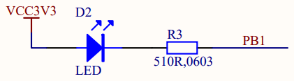
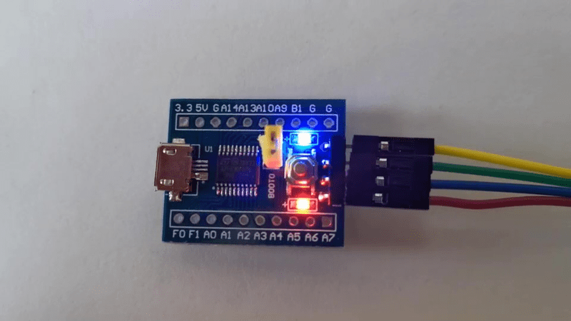

This board is based on the micro-controller STM32F030F4P6, so let's learn about its implementation of GPIOs.
Diving in the reference manual RM0360, I find the layout of the GPIO B registers and their initial state plus the info that peripheral clocks need to be enabled through the Reset and Clock Controller (RCC) connected on the AHB1 bus. So I need to activate the clocks of GPIO B through the RCC before I can access its registers.
To turn the user LED on, I need to
/* Memory locations defined by linker script */
extern long __StackTop ; /* &__StackTop points after end of stack */
void Reset_Handler( void) ; /* Entry point for execution */
/* Interrupt vector table:
* 1 Stack Pointer reset value
* 15 System Exceptions
* NN Device specific Interrupts
*/
typedef void (*isr_p)( void) ;
isr_p const isr_vector[ 2] __attribute__((section(".isr_vector"))) = {
(isr_p) &__StackTop,
/* System Exceptions */
Reset_Handler
} ;
#define RCC ((volatile long *) 0x40021000)
#define RCC_AHBENR RCC[ 5]
#define RCC_AHBENR_IOPBEN 0x00040000 /* 18: I/O port B clock enable */
#define GPIOB ((volatile long *) 0x48000400)
#define GPIOB_MODER GPIOB[ 0]
void Reset_Handler( void) {
/* User LED ON */
RCC_AHBENR |= RCC_AHBENR_IOPBEN ; /* Enable IOPB periph */
GPIOB_MODER |= 1 << (1 * 2) ; /* PB1 Output [01], over default 00 */
/* OTYPER Push-Pull by default */
/* PB1 output default LOW at reset */
for( ;;) ;
}
- I use the C preprocessor to specify the mapping of the peripheral
registers.
- The naming convention is from the Reference Manual, the address locations from the Data Sheet.
- Registers are indicated as volatile as they may change out of the code control, this way the compiler will avoid optimizations based on known states.
To build I just request the format I need, either .bin or .hex.
$ make ledon.hex
ledon.elf
text data bss dec hex filename
40 0 0 40 28 ledon.elf
ledon.hex
rm ledon.elf ledon.o

Next, I will implement the classic blinking LED.